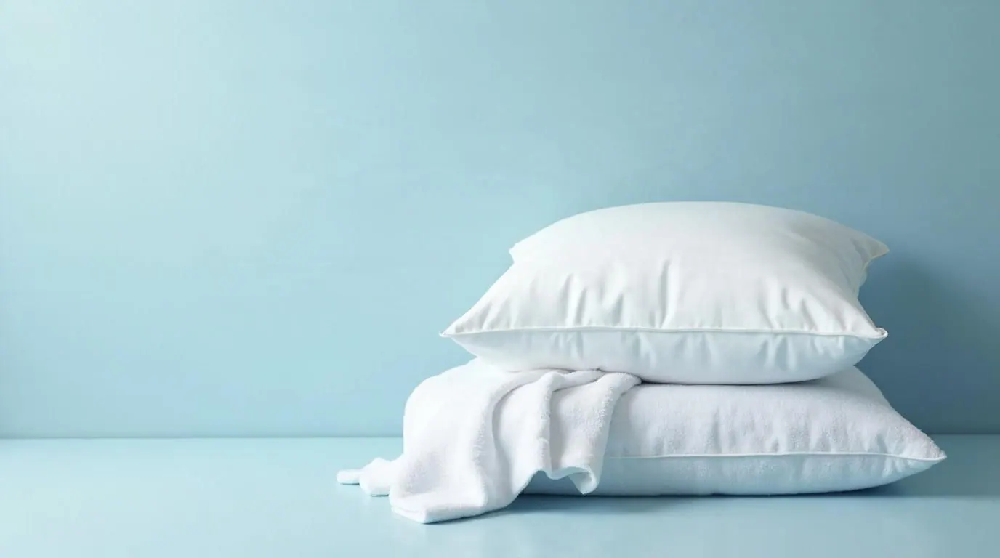

무거운 장바구니를 한 손으로 들고 언덕을 오르면 손목과 팔꿈치 바깥쪽에 부담이 몰릴 수 있어, 드는 방법과 무게, 아픈 동작을 먼저 묻고 짐을 나누는 생활 요령부터 함께 정리합니다.
여쭙는 것
- 장바구니를 주로 어느 손으로, 손가락에 걸어서 드시나요?
- 시큰한 곳이 팔꿈치 바깥쪽인가요, 안쪽인가요, 손목인가요?
- 행주 짜기, 병뚜껑 열기, 프라이팬 들기 중 어떤 동작이 불편한가요?
생활에서 해 볼 것
- 한 손에 몰지 말고 양손으로 무게를 나누거나 바퀴 달린 장바구니 쓰기
- 손가락에 봉지를 걸지 말고 손바닥 전체로 손잡이 쥐기, 손잡이가 가늘면 수건을 감아…
- 들 때는 팔꿈치를 몸 옆에 붙이고 손목을 곧게 펴서 꺾이지 않게 하기
한의원에서 함께 살필 것
- 손목과 팔꿈치 통증이 장보기나 집안일 때마다 반복되는 경우 불편한 동작과 아픈 지점…
- 어깨와 목까지 뻐근함이 이어지는 경우 팔 전체의 긴장을 함께 살핍니다.
- 손이 차거나 저린 느낌이 함께 있는 경우 손의 순환과 잠의 리듬도 이어서 여쭙니다.
먼저 확인이 필요한 신호
- 넘어지며 손을 짚은 뒤 손목이 붓고 멍이 든 경우
- 팔꿈치가 붓고 뜨겁거나 열이 함께 나는 경우
- 손가락 감각이 둔해지거나 힘이 빠져 물건을 자주 떨어뜨리는 경우

장바구니를 들고 언덕을 오른 뒤 손목과 팔꿈치가 시큰하다면, 손가락에 봉지를 걸어 한 손으로 버티는 습관과 한 번에 드는 무게를 먼저 바꿔 보는 것이 좋습니다. 상도동처럼 오르막이 긴 동네에서는 쥐는 힘을 오래 쓰다 보니 행주를 짜거나 문고리를 돌릴 때 팔꿈치 바깥쪽이 시큰하다는 분이 많습니다.
쥐고 버티는 시간이 줄면 시큰함도 덜해지는 분이 많지만, 2~3주 넘게 같은 동작에서 아프거나 컵을 들 때도 시큰하다면 아픈 동작을 기준으로 한 번 살펴보시는 것이 좋습니다. 넘어진 뒤 손목이 부었거나 손가락 감각이 둔해졌다면 생활 조정보다 확인이 먼저입니다.
왜 이런 불편이 생길 수 있나요
- 물건을 꽉 쥐고 버틸 때는 손목이 꺾이지 않도록 받쳐 주는 근육이 함께 일하는데, 이 근육들이 팔꿈치 바깥쪽에 붙어 있어 봉지를 손가락에 걸고 오래 버티면 그 자리에 부담이 쌓입니다.
- 오르막에서는 몸을 앞으로 기울이며 팔에 힘을 더 주게 되고, 중간에 쉬지 않고 한 번에 오르면 쥐는 시간도 그만큼 길어집니다.
- 장보기 다음 날 행주 짜기, 프라이팬 들기처럼 쥐고 비트는 동작이 이어지면 쉴 틈이 없습니다.
- 손목을 꺾은 채 무게를 들면 손목 엄지 쪽에도 통증이 생길 수 있습니다.
- 추운 날 장갑 없이 언 손으로 봉지를 쥐면 손가락과 손목에 힘이 더 들어가기 쉽습니다.
- 팔꿈치 바깥쪽이 아프면 손목을 받치는 근육 쪽을, 안쪽이 아프면 손가락을 구부리는 근육 쪽 부담을 먼저 생각해 봅니다.

먼저 이렇게 여쭙니다
- 장바구니를 주로 어느 손으로, 손가락에 걸어서 드시나요?
- 시큰한 곳이 팔꿈치 바깥쪽인가요, 안쪽인가요, 손목인가요?
- 행주 짜기, 병뚜껑 열기, 프라이팬 들기 중 어떤 동작이 불편한가요?
- 장 보는 날 다음 날 아침에 더 뻣뻣한가요?
- 언제부터, 얼마나 자주 아팠나요?
- 손가락이 저리거나 밤에 손이 저려 깬 적이 있나요?
- 최근 김장이나 이사처럼 손을 많이 쓴 일이 있었나요?
- 다시 오신 분께는 지난번 이후 장보기 방법을 바꿔 보셨는지부터 이어서 여쭙니다.
일상에서 먼저 해 볼 수 있는 것
- 한 손에 몰지 말고 양손으로 무게를 나누거나 바퀴 달린 장바구니 쓰기
- 손가락에 봉지를 걸지 말고 손바닥 전체로 손잡이 쥐기, 손잡이가 가늘면 수건을 감아 두껍게 쥐기
- 들 때는 팔꿈치를 몸 옆에 붙이고 손목을 곧게 펴서 꺾이지 않게 하기
- 오르막 중간에 한 번 내려놓고 손목을 가볍게 털어 주기
- 장 보는 양을 두 번에 나누고, 물이나 쌀처럼 무거운 것은 배달을 이용해 보기
- 추운 날에는 장갑을 끼고 손을 데운 뒤 들기
- 아픈 동안은 행주를 비틀어 짜기보다 손바닥으로 눌러 물기 빼기

상황별 예시
- 예를 들어 퇴근길에 장을 보고 언덕을 올라 집에 가는 직장인의 경우, 하루 종일 마우스를 쥔 손으로 다시 무거운 봉지를 들게 되어 저녁마다 팔꿈치 바깥쪽이 시큰할 수 있습니다. 장보기를 주말과 평일 한 번씩으로 나누고, 회사에서는 한 시간에 한 번 손목을 쉬게 하는 것부터 해 볼 수 있습니다.
- 예를 들어 무릎이 불편해 지팡이를 짚고 언덕을 오르는 어르신의 경우, 남은 한 손으로만 장바구니를 들게 되어 한쪽 손목에 부담이 몰리기 쉽습니다. 바퀴 달린 장바구니를 쓰거나 가족과 장보는 날을 맞추는 방법을 함께 이야기해 봅니다.
- 예를 들어 한쪽 팔로 아이를 안고 다른 손에 장바구니를 드는 부모의 경우, 손목과 팔꿈치뿐 아니라 어깨와 허리까지 한쪽으로 기울기 쉬워 안는 쪽과 드는 쪽을 번갈아 바꾸는 요령을 먼저 살펴봅니다.
스스로 점검해 보세요
- 장바구니를 늘 같은 손, 손가락에 걸어 든다
- 행주를 짜거나 병뚜껑을 열 때 팔꿈치 바깥쪽이 시큰하다
- 장 본 다음 날 아침에 손목이나 팔꿈치가 더 뻣뻣하다
- 컵이나 주전자를 들 때도 아픈 날이 늘었다
- 팔꿈치 바깥쪽 뼈 근처를 누르면 콕 집어 아픈 자리가 있다
- 손가락이 저리거나 힘이 빠져 물건을 놓친 적이 있다
앞의 다섯 가지는 드는 방법과 무게부터 바꿔 볼 신호이고, 마지막 항목에 해당하면 먼저 확인을 받아 보세요.

한의원에서 함께 살필 수 있는 경우
- 손목과 팔꿈치 통증이 장보기나 집안일 때마다 반복되는 경우 불편한 동작과 아픈 지점을 함께 살핍니다.
- 어깨와 목까지 뻐근함이 이어지는 경우 팔 전체의 긴장을 함께 살핍니다.
- 손이 차거나 저린 느낌이 함께 있는 경우 손의 순환과 잠의 리듬도 이어서 여쭙니다.
좋은꿈참사랑한의원에서는 첫 방문 때 장보기와 집안일에서 아픈 동작, 시작된 시기와 아픈 위치를 먼저 듣고 맥부터 짚어 봅니다. 그 뒤 손목을 젖히거나 주먹을 쥘 때 어디가 아픈지, 누르면 아픈 자리가 어디인지 확인하고, 필요하다고 판단될 때 초음파로 팔꿈치와 손목의 힘줄 주변을 살핍니다.
상태에 맞춰 침·약침·온열 등을 정하고, 오래 이어진 힘줄 주변 통증이라면 체외충격파를 쓸지도 진찰 후 함께 판단합니다. 귀가 전에는 쥐는 방법과 짐을 나누는 요령, 다음 방문 때 다시 확인할 동작을 함께 정해 드립니다.
얼마나 지켜보고 언제 상담할까요
- 드는 방법과 무게를 바꾼 뒤 1~2주는 아픈 동작이 어떻게 달라지는지 지켜보세요.
- 2~3주가 지나도 행주 짜기나 병뚜껑 열기처럼 같은 동작에서 계속 시큰하다면 상담을 권합니다.
- 장을 보지 않은 날에도 아프거나 가만히 쉴 때도 욱신거린다면 더 기다리지 말고 상담해 보세요.
- 넘어지며 손을 짚은 뒤 붓고 멍이 들었다면 바로 확인을 받으세요.

이렇게 기록해 오시면 상담이 쉬워집니다
- 아픈 동작 두세 가지(행주 짜기, 병뚜껑 열기 등)
- 장보는 횟수와 대략의 무게, 언덕을 오르는 데 걸리는 시간
- 가장 아픈 위치(손가락으로 짚어 사진을 찍어 오셔도 됩니다)
- 아픈 동작을 휴대폰 영상으로 짧게 찍어 둔 것
- 드시는 진통제와 복용 횟수, 붙이는 파스
이런 증상은 먼저 확인이 필요합니다
- 넘어지며 손을 짚은 뒤 손목이 붓고 멍이 든 경우
- 팔꿈치가 붓고 뜨겁거나 열이 함께 나는 경우
- 손가락 감각이 둔해지거나 힘이 빠져 물건을 자주 떨어뜨리는 경우
복용 중인 진통제나 다른 약은 처방한 의사와 상의 없이 줄이거나 끊지 않습니다. 다친 뒤 시작된 통증이나 붓기가 심한 경우에는 영상 검사가 가능한 의료기관 확인이 먼저일 수 있습니다.

관련 글
- 김장을 하고 난 다음 날 손목과 엄지 쪽이 시큰할 때는 어떻게 살피나요?
- 새벽 시장처럼 찬물과 무거운 상자를 다루는 일을 할 때 손목과 허리는 어떻게 챙기나요?
- 엄지 쪽 손목이 아파 휴대폰 쥐기도 불편할 때는 어떻게 살피나요?
한눈에 보는 표
| 구분 | 핵심 |
|---|---|
| 여쭙는 것 | 장바구니를 주로 어느 손으로, 손가락에 걸어서 드시나요? 시큰한 곳이 팔꿈치 바깥쪽인가요, 안쪽인가요, 손목인가요? |
| 생활에서 해 볼 것 | 한 손에 몰지 말고 양손으로 무게를 나누거나 바퀴 달린 장바구니 쓰기 손가락에 봉지를 걸지 말고 손바닥 전체로 손잡이 쥐기, 손잡이가 가늘면 수건을 감아 두껍게 쥐기 |
| 한의원에서 함께 살필 것 | 손목과 팔꿈치 통증이 장보기나 집안일 때마다 반복되는 경우 불편한 동작과 아픈 지점을 함께 살핍니다. 어깨와 목까지 뻐근함이 이어지는 경우 팔 전체의 긴장을 함께 살핍니다. |
| 먼저 확인이 필요한 신호 | 넘어지며 손을 짚은 뒤 손목이 붓고 멍이 든 경우 팔꿈치가 붓고 뜨겁거나 열이 함께 나는 경우 |
자주 묻는 질문
보호대를 하고 다니면 도움이 되나요?
무거운 것을 드는 날에는 도움이 될 수 있지만, 하루 종일 꽉 조이는 것은 피하는 것이 좋습니다. 어떤 보호대가 맞는지는 아픈 자리를 보고 함께 이야기합니다.
아플 때 찜질은 차갑게 하나요, 따뜻하게 하나요?
갑자기 붓고 열감이 있을 때는 차갑게, 뻐근하고 굳은 느낌일 때는 따뜻하게 하는 편이 일반적입니다. 헷갈리면 진료 때 여쭤보세요.
아픈 쪽 팔은 아예 안 쓰는 게 좋나요?
완전히 쓰지 않기보다 아픈 동작을 줄이고 무게를 나누는 것이 좋습니다. 어느 정도까지 써도 되는지는 진료 때 함께 정합니다.
팔꿈치를 꾹꾹 눌러 늘려 주면 도움이 되나요?
아픈 힘줄을 세게 누르거나 억지로 당기면 오히려 더 시큰해질 수 있습니다. 가볍게 손목을 돌리는 정도로 하고, 맞는 동작은 진료 때 함께 정합니다.
이 글은 일반적인 건강 정보이며 개인의 진단이나 치료를 대신하지 않습니다. 증상이 있거나 복용 중인 약이 있다면 진료를 통해 확인하세요. 치료 효과는 개인마다 다를 수 있습니다.
작성 기준: 일반적으로 알려져 있는 건강 정보를 참고해 정리했습니다(대표원장 감수). 증상 기록은 1~2주 동안 하루 1회, 비슷한 시간에 적어 오시면 지난 상태와 비교하기 쉽습니다.
좋은꿈참사랑한의원은 재진 때 지난번 이야기부터 이어서 여쭙니다. 진료시간과 예약은 오시는 길에서 확인하세요.
어디서 상담받을 수 있나요?
좋은꿈참사랑한의원은 서울 동작구 만양로2길 2 신성빌딩 3층·5층(서울 동작구 상도동, 7호선 상도역 3번 출구 근처)에 있습니다. 한의사 3명(이종호 대표원장, 조영기 수석진료원장, 정원영 진료원장)이 진료합니다. 진료시간은 평일 09:30~20:00(점심 13:00~14:00), 토·일·공휴일 09:30~15:00이며, 방문 전 전화로 확인을 권합니다. 예약은 네이버 예약, 카카오톡 상담, 전화 02-815-7510로 받습니다.